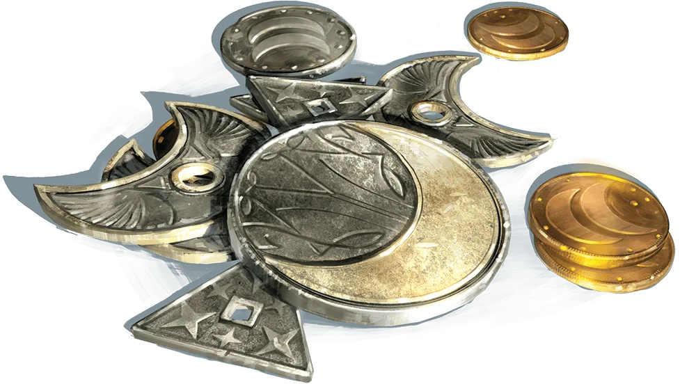

Haicia
A nation of Gold and Graves,
Beasts of Burden and Men of Mettle toil
Stunting the Defiant Reclaimers
Overview
The Country was founded with the belief that when people are left to their own devices, everyone prospers. This idea holds true even today, hundreds of years past conception. The royal family declared Brimhold the capital and has been ruling fairly since, with little direct influence on the major civilizations. Nationwide taxes are very few and about the only direct influence the capital has on the people and the smaller settlements. The country is known among its neighbors as the youngest Feaian Nation.
The untamed wilderness within Haicia's borders allow for major exports of lumber, quarried stones, and rare minerals. The driving force behind most smaller economies is bartering or use of the Haician coins. These coins are protected by powerful magic from the Brimhold Court wizard's design. Such protections protect from piracy and guard the value of the coins.
Ecology and Settlements
The wilderness is teeming with life. The locals have reported sightings of almost any type of monster. Ranging from goblins to giants, the wilds of this infant nation are not to be underestimated. Some southern villages have begun applying warding magic to their barriers to separate themselves from the forests. The creatures here have little to no extreme variations in physical traits due to the country having a homogenous climate, with few exceptions. The coast and northeastern corner are exceptions to the homogeneity of geography, as the coast ranges from temperate in the north to nigh tropical in the south and the northeastern corner is considered to be an extremity of the Stoka Desert.
Prominent Events
The land of Haicia has had a rather slow growth, leading to a very peaceful rise to prominence.
- The earliest recorded advancement from the region was the invention of magical school of graviturgy, finally codefying the magic surrounding mass, entropy, and cosmic energies.
- In combination with multiple other events continent-wide, the march of a, once thought dead, god's army drew the 23rd era to a close. This march was quenched by a group of heroes who
rose to the challenge to save the realm. These heroes were spoke of in legend as
- The Prodigal Berserker - whose rage felled tyrants
- The wildcard - able to evade the deftest oracles
- The Grove-Mother - rumored to still be rebuilding her forest
- The Good Soldier - who had the spirit to rally many armies
- The Deviant - who fell into god-hood.